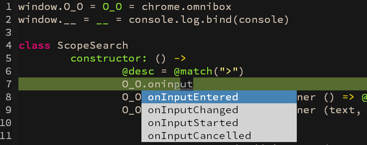

ac-coffee
Emacs auto-complete source for CoffeeScript.
Current version uses a simple laxer-based approach and provides little information other than keyword identifier (e.g. variable, method names) list. That's enough for most common usage. The next version will be grammar-based.
Requirements
- Node.js
- Coffee
- Emacs 24+
- auto-complete
Installation
- Clone this repo
- In repo folder, run
npm install coffee - Configure
.emacs
;; My Coffee AC Source
(add-to-list 'load-path "path/to/ac-coffee/")
(require 'ac-coffee)
Done!